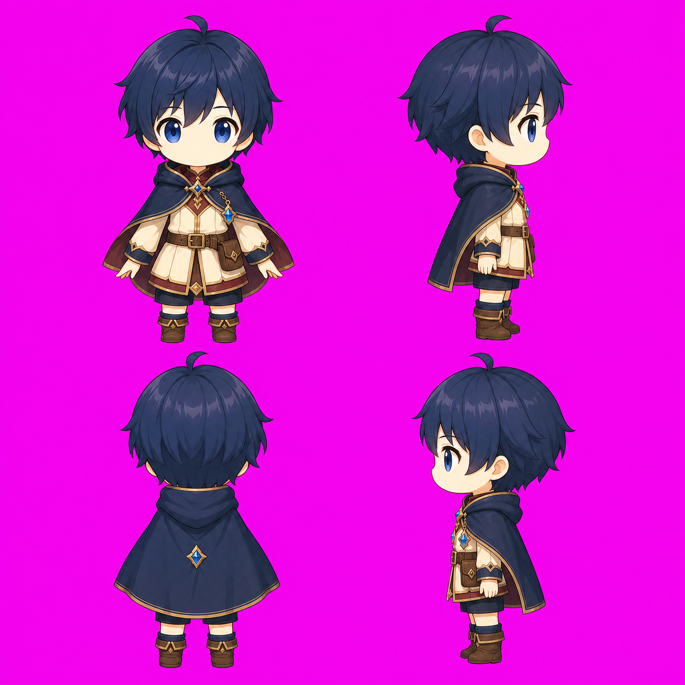
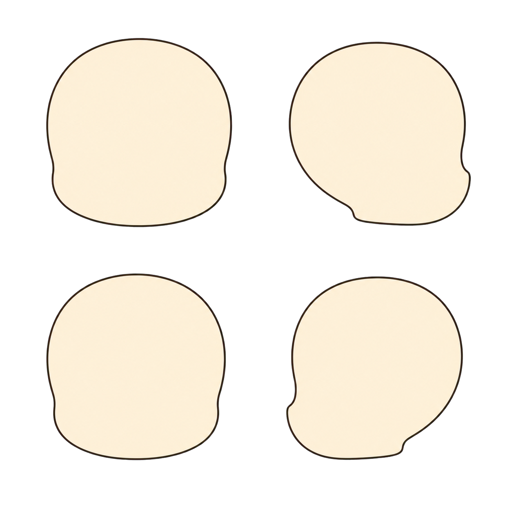
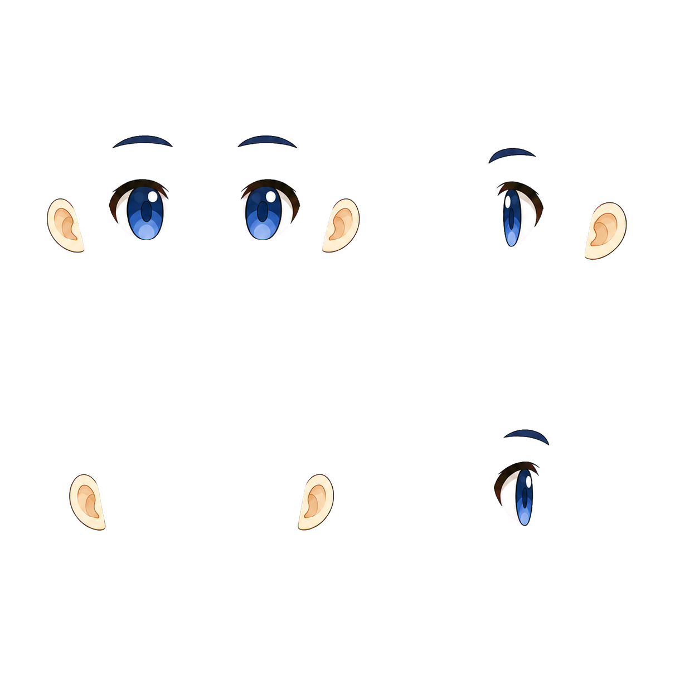
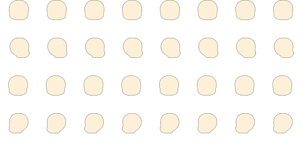
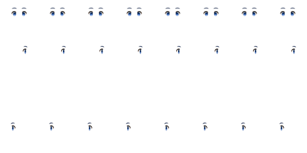
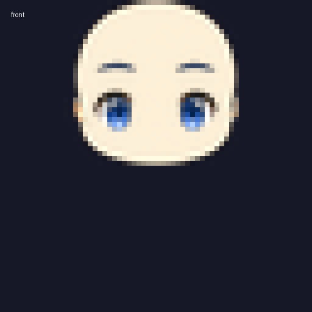
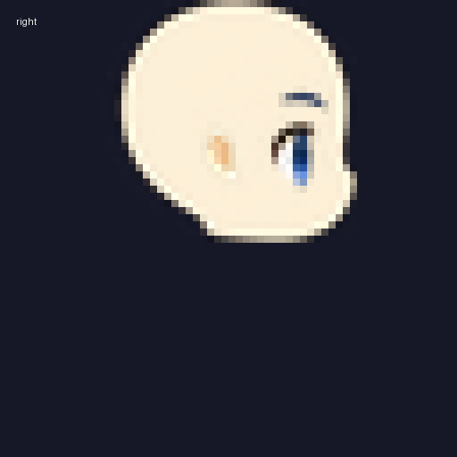
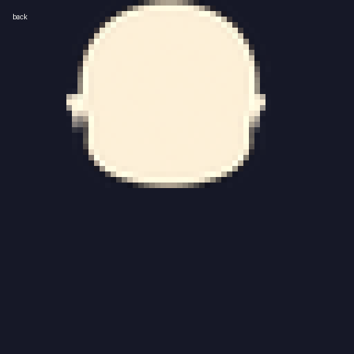
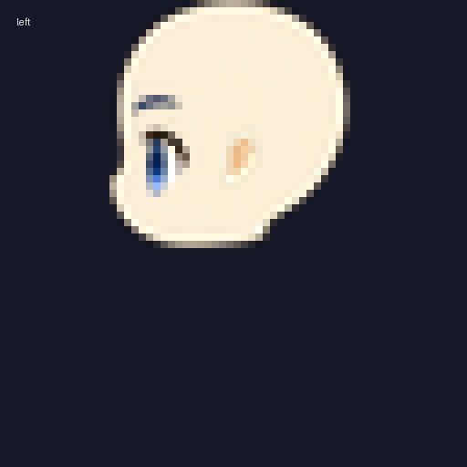

AssetsLab 美术素材预览
当前版本：重建头部 v1 · 4 方向 · 8 行走帧 · 静态文件预览
本页只引用项目内文件，不依赖临时 test_output，因此预览不会因为测试输出清理而消失。重新生成资源后刷新本页即可。
方向约定
| 方向行 | 方向 | 输入 | 头部基底 | 侧脸特征来源 |
|---|---|---|---|---|
| 0 | 正脸 / front | S / 下 | front | front |
| 1 | 右侧脸 / right | D / 右 | right | source left（2/4 交换） |
| 2 | 背脸 / back | W / 上 | back | back（无眼睛眉毛） |
| 3 | 左侧脸 / left | A / 左 | left | source right（2/4 交换） |
这里的“交换”是资源来源映射，不再额外做隐含水平翻转；Godot 的 D/A 输入仍然对应右/左基底。
整体与独立重建输入



当前 Godot 运行图集



逐方向叠加预览




实现位置
tools/process_rebuild_atlas.py 负责独立基底与特征图层处理；tools/build_rebuild_runtime_assets.py 负责 Godot 运行图集与方向来源映射；prototype/scripts/player.gd 负责 D/A/W/S 到方向行的选择。
查看当前测试命令
.\tools\run_headless_tests.ps1 -RebuildHead -AppearanceSeed 20260730